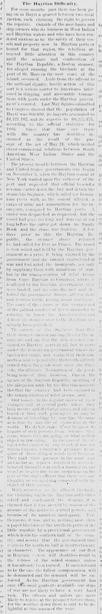
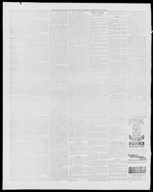

The vessel is now seized and held by the Haytian govEl buque se encuentra ahora embargado y retenido por el gobierno haitiano
Burlington Weekly Free Press. Burlington, Vt., December 14, 1888. Page 4. Published by Geo. W. & G.G. Benedict. A weekly newspaper, 1866–1928.Burlington Weekly Free Press. Burlington, Vt., 14 de diciembre de 1888. Página 4. Publicado por Geo. W. & G.G. Benedict. Periódico semanal, 1866–1928. View the originalVer el original


See the full pageVer la página completaThe Burlington weekly free press reported on December 14, 1888, that the steamer Haytian Republic (also referred to as the Saginaw) had been seized and held as a prize by the Haytian government for allegedly carrying contraband of war, supplying munitions, and transporting rebel troops to aid insurgents. While the Haytian authorities claimed the vessel aided insurgents who subsequently defeated government troops, the ship's owners denied carrying insurgent supplies, stating the cargo was unloaded at ports under the Dominican government and that their responsibility ended once the goods left the ship.El Burlington weekly free press informó el 14 de diciembre de 1888 de que el vapor Haytian Republic (denominado asimismo Saginaw) había sido capturado y declarado presa de guerra por las autoridades haitianas bajo la imputación de transportar contrabando de guerra, proveer pertrechos y trasladar contingentes rebeldes para secundar la insurrección. En tanto el gobierno haitiano aseveraba que la nave prestó auxilio a sediciosos que luego vencieron a tropas oficiales, los armadores negaron haber conducido vituallas revolucionarias, manifestando que los cargamentos se desembarcaron en puertos bajo jurisdicción dominicana y que sus obligaciones fenecían una vez los fardos salían de a bordo.
FULL TEXT:TEXTO COMPLETO:
Burlington Weekly Free Press December 14, 188814 de diciembre de 1888
The Haytian Difficulty.La dificultad haitiana.
For some months past there has been going on in Hayti a quarrel between two rival faction, each claiming the right to govern the republic. Outside of the merchants and ship owners who do business in West Indian and Haytian waters and who have been rendered anxious as to the safety of their vessels and property now in Haytian ports or bound for that region, the rebellion attracted little attention in this country until the seizure and confiscation of the Haytian Republic, a Boston steamer, for alleged running the blockade at the port of St. Mars on the west coast of the island, occurred. Aside from the affront to the national dignity, hostile action of this sort is a serious matter to Americans interested in shipping and mercantile transactions with ports under the Haytian government's control. Last May figures submitted to Congress showed that the population of Hayti was 800,000, its imports amounted to $4,121,162, and its exports to $6,271,475, according to the official statistics for 1886. Since that time our trade with the country has doubtless increased as the result of the passage of the act of May 24, which invited closer commercial relations between South American West Indian States and the United States.Durante algunos meses pasados ha estado ocurriendo en Haití una disputa entre dos facciones rivales, cada una reclamando el derecho de gobernar la república. Fuera de los comerciantes y armadores que hacen negocios en aguas de las Indias Occidentales y haitianas y que se han visto ansiosos en cuanto a la seguridad de sus buques y propiedades ahora en puertos haitianos o con destino a esa región, la rebelión atrajo poca atención en este país hasta que ocurrió la captura y confiscación de la Haytian Republic, un vapor de Boston, por alegadamente correr el bloqueo en el puerto de St. Marc en la costa oeste de la isla. Aparte de la afrenta a la dignidad nacional, una acción hostil de esta clase es un asunto serio para los estadounidenses interesados en el transporte marítimo y las transacciones mercantiles con puertos bajo el control del gobierno haitiano. En mayo pasado cifras sometidas al Congreso mostraron que la población de Haití era de 800,000, sus importaciones ascendían a $4,121,162, y sus exportaciones a $6,271,475, según las estadísticas oficiales de 1886. Desde ese momento nuestro comercio con el país sin duda ha aumentado como resultado de la aprobación de la ley del 24 de mayo, que invitó a relaciones comerciales más estrechas entre los Estados sudamericanos y de las Indias Occidentales y los Estados Unidos.
The present trouble between the Haytian and United States governments was begun on November 5, when the Haytian consul at New York waited upon the collector of the port and requested that official to send a revenue cutter down the bay and detain the steamship Saginaw, which sailed for Dominican ports with, as the consul alleged, a cargo of arms and ammunition for the insurgents, consigned to Haytian ports. A cutter was despatched as requested, but the vessel had gone too long and was out at sea long before the cutter got down to Sandy Hook and the chase was fruitless. A few days prior to this the Haytian Republic, the steamer above referred to, had sailed for Port au Prince. The vessel is now seized and held by the Haytian government as a prize, it being claimed by the government that she carried contraband of war and had aided the insurgents, not only by supplying them with munitions of war, but by the transportation of rebel troops from Cape Haytian to Gonaives, where, it is alleged by the Haytian government, they were landed, and the same day met and defeated the government troops, after a short and decisive battle, lasting about four hours. The story of the seizure of the steamer and of the gallant conduct of her commander in refusing to lower the American flag and deliver the steamer over to the Haytians has already been published.El presente problema entre los gobiernos haitiano y de los Estados Unidos comenzó el 5 de noviembre, cuando el cónsul haitiano en Nueva York visitó al recaudador del puerto y pidió a ese oficial que enviara un guardacostas por la bahía y detuviera el vapor Saginaw, que zarpó para puertos dominicanos con, como alegó el cónsul, una carga de armas y municiones para los insurgentes, consignada a puertos haitianos. Un guardacostas fue despachado como se pidió, pero el buque se había ido hacía demasiado y estaba en el mar mucho antes de que el guardacostas bajara a Sandy Hook y la persecución fue infructuosa. Unos días antes de esto la Haytian Republic, el vapor referido arriba, había zarpado para Puerto Príncipe. El buque está ahora capturado y retenido por el gobierno haitiano como presa, siendo reclamado por el gobierno que llevaba contrabando de guerra y había ayudado a los insurgentes, no solo suministrándoles municiones de guerra, sino por el transporte de tropas rebeldes desde Cabo Haitiano a Gonaives, donde, se alega por el gobierno haitiano, fueron desembarcadas, y el mismo día encontraron y derrotaron a las tropas del gobierno, tras una batalla corta y decisiva, que duró unas cuatro horas. La historia de la captura del vapor y de la gallarda conducta de su comandante al negarse a arriar la bandera estadounidense y entregar el vapor a los haitianos ya ha sido publicada.
The owners of the Saginaw deny that their steamer carried any supplies for the insurgents and say that the ship was not consigned to Haytian ports at all, but to ports under the Dominican government where she landed her cargo, and claim that their connection and responsibility therewith entirely ceased when the goods were over the ship's side, the ultimate destination of the goods being none of their business. One of the agents of the Haytian Republic, speaking of the allegation made by the Haytian authorities that the steamer had been engaged in the transportation of rebel troops, said:Los propietarios del Saginaw niegan que su vapor llevara suministros algunos para los insurgentes y dicen que el buque no estaba consignado a puertos haitianos en absoluto, sino a puertos bajo el gobierno dominicano donde desembarcó su carga, y reclaman que su conexión y responsabilidad con ello cesaron enteramente cuando las mercancías estuvieron sobre el costado del buque, no siendo el destino final de las mercancías asunto suyo. Uno de los agentes de la República haitiana, hablando de la alegación hecha por las autoridades haitianas de que el vapor había estado comprometido en el transporte de tropas rebeldes, dijo:
Our vessels, in the regular course of their voyages, call at several ports where they both receive and discharge cargo, and take on board or land such passengers as may be desirous of travelling by our line, the same as is done by any line of steamships in the world. We do not make it our business to inquire of such persons from whence they come, where they are going, or what is their object in travelling. In the case of the alleged rebel carried by our vessel, it was not within Captain Compton's province to inquire of these alleged rebels their business. They paid their passage in the usual way and as far as reports received by us show, behaved themselves in such a manner on our vessel as to give rise to no suspicions on the part of the ship's officers that there was any illegality or wrong-doing connected with the object of their voyage.Nuestros buques, en el curso regular de sus viajes, llaman a varios puertos donde tanto reciben como descargan carga, y toman a bordo o desembarcan tales pasajeros como puedan desear viajar por nuestra línea, lo mismo que hace cualquier línea de vapores en el mundo. No hacemos nuestro negocio indagar de tales personas de dónde vienen, adónde van, o cuál es su objeto al viajar. En el caso del alegado rebelde llevado por nuestro buque, no estaba dentro de la provincia del capitán Compton indagar de estos alegados rebeldes su negocio. Pagaron su pasaje del modo usual y según los informes recibidos por nosotros muestran, se comportaron de tal manera en nuestro buque que no dieron lugar a sospechas por parte de los oficiales del buque de que hubiera ilegalidad o mal proceder alguno conectado con el objeto de su viaje.
With reference to the alleged blockade, for violating which the Haytian authorities seized and condemned the steamer, it is claimed that it was invalid by reason of the absence of due notice to neutral powers, and because of its manifest inadequacy. Furthermore, it was, and is, nothing more than a paper blockade of the northern ports of the little republic by a provisional government which holds the southern half of the country, and asserts that the government that controls the northern half is insurrectionary in character. The appearance of our fleet in Haytian waters will doubtless result in the release of the seized steamer unless it has already been burned. If such is found to be the case the fullest compensation will be demanded and the demand will be enforced. As the Haytian government has only two small gunboats available our ships of war are not likely to have a very hard task. The officers and sailors are more likely to rejoice at the prospect before them, for the weather down there is said to be delightful at this season of the year.Con referencia al alegado bloqueo, por violar el cual las autoridades haitianas capturaron y condenaron el vapor, se reclama que era inválido por razón de la ausencia de debido aviso a las potencias neutrales, y a causa de su manifiesta inadecuación. Además, era, y es, nada más que un bloqueo de papel de los puertos del norte de la pequeña república por un gobierno provisional que tiene la mitad sur del país, y afirma que el gobierno que controla la mitad norte es de carácter insurreccional. La aparición de nuestra flota en aguas haitianas sin duda resultará en la liberación del vapor capturado a menos que ya haya sido quemado. Si se encuentra que tal es el caso se demandará la compensación más completa y la demanda será hecha cumplir. Como el gobierno haitiano tiene solo dos pequeños cañoneros disponibles nuestros buques de guerra no es probable que tengan una tarea muy dura. Los oficiales y marineros es más probable que se regocijen ante la perspectiva ante ellos, pues se dice que el clima allá abajo es delicioso en esta estación del año.
[Editor's note: the paper writes of the east as part of Hayti. From 1822 to 1844 the Dominican Republic was held by Haitian military occupation, against its people's will; it restored its independence on February 27, 1844.][Nota del editor: el periódico habla del este como parte de Haití. De 1822 a 1844 la República Dominicana estuvo bajo ocupación militar haitiana, contra la voluntad de su pueblo; restauró su independencia el 27 de febrero de 1844.]